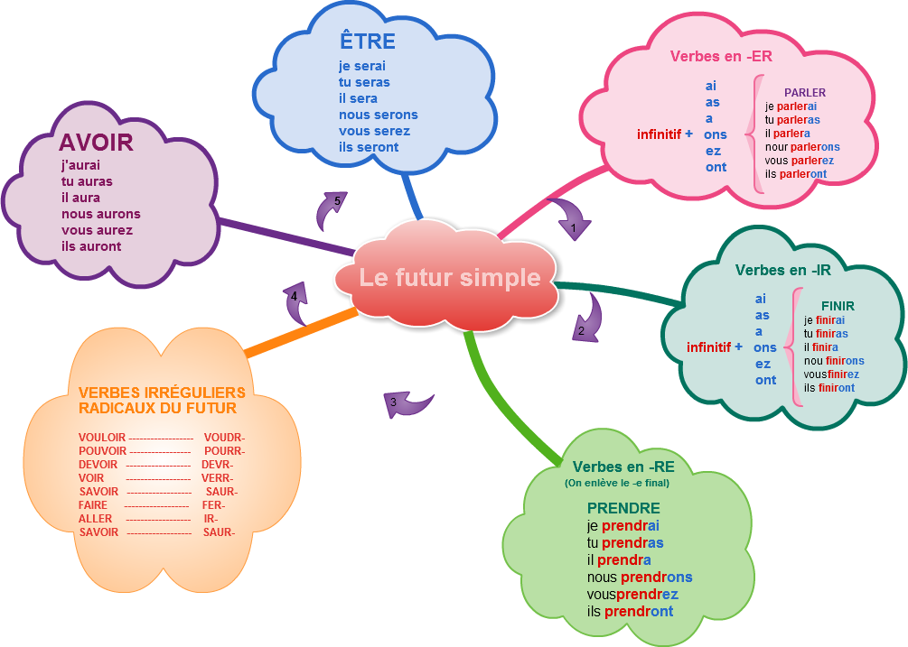
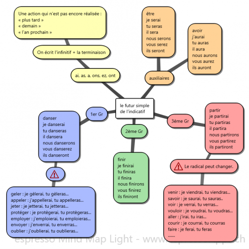

Le futur simple de l'indicatif
À retenir
Le futur simple exprime une action qui n'est pas encore réalisée, qui se déroulera dans l'avenir. On l'utilise avec des indicateurs de temps comme "demain", "plus tard", "l'année prochaine".
Construction : infinitif du verbe + terminaisons -ai, -as, -a, -ons, -ez, -ont
Attention : pour les verbes en -RE, on enlève le -e final avant d'ajouter les terminaisons.
Conjugaison complète
Les valeurs du futur simple
Action future (projet)
Le futur simple exprime une action qui se déroulera dans l'avenir, souvent accompagnée d'un indicateur de temps.
Demain, je partirai en vacances.
L'année prochaine, nous changerons de maison.
Plus tard, tu comprendras.
Supposition
Le futur simple peut exprimer une hypothèse, une supposition sur le présent ou le futur.
Il n'est pas là ? Il sera en retard.
Tu auras sans doute raison.
On sera une vingtaine ce soir.
Phrases conditionnelles
Dans une phrase avec "si" + présent, la proposition principale est au futur simple.
Si tu travailles, tu réussiras.
S'il fait beau demain, nous irons à la plage.
Si vous venez, je serai content.
Après "quand", "lorsque", "dès que"
Dans une subordonnée de temps, on utilise le futur simple pour une action à venir.
Quand tu viendras, nous sortirons.
Dès que j'aurai fini, je t'appellerai.
Lorsque vous serez prêts, on partira.
Futur simple ou futur proche ?
Futur simple : avenir plus lointain, souvent à l'écrit. Ex: Je partirai dans deux ans.
Futur proche : avenir immédiat, souvent à l'oral. Ex: Je vais partir tout à l'heure.
Pièges à éviter
Futur simple ≠ Conditionnel présent
Futur simple : je parlerai, tu parleras, il parlera...
Conditionnel présent : je parlerais, tu parlerais, il parlerait...
Exemple :
✅ Demain, je mangerai au restaurant. (futur)
✅ Si j'avais faim, je mangerais bien. (conditionnel)
Astuce : le conditionnel a toujours un -s à la 1re personne du singulier.
Verbes en -RE : n'oublie pas d'enlever le -e !
Règle : infinitif - e + terminaisons
❌ prendre → je prendrai
✅ prendre → je prendrai
Autres exemples :
vendre → je vendrai
mettre → je mettrai (attention au radical : mett-)
craindre → je craindrai
Les irréguliers à connaître par cœur
Les plus fréquents :
aller → j'irai
faire → je ferai
venir → je viendrai
voir → je verrai
pouvoir → je pourrai
vouloir → je voudrai
devoir → je devrai
savoir → je saurai
courir → je courrai (2 r)
mourir → je mourrai (2 r)
envoyer → j'enverrai
Le doublement du R
Attention à ces verbes :
courir → je courrai (2 r)
mourir → je mourrai (2 r)
envoyer → j'enverrai (2 r)
voir → je verrai (2 r)
pouvoir → je pourrai (2 r)
vouloir → je voudrai (1 r, mais radical différent)
L'accent grave (é → è)
Verbes en -é*er : le é devient è devant une syllabe muette.
céder → je cèderai
régler → je règlerai
espérer → j'espérerai (le é reste é car la terminaison -erai n'est pas muette)
Mais attention :
jeter → je jetterai (doublement, pas d'accent)
acheter → j'achèterai (accent grave, pas de doublement)
Verbes en -yer
Le y devient i :
employer → j'emploierai
nettoyer → je nettoierai
essuyer → j'essuierai
Exceptions (verbes en -ayer) :
payer → je paierai OU je payerai (les deux sont corrects)
balayer → je balaierai OU je balayerai
Cartes mentales
Carte 1 - Récapitulatif

Carte 2 - Construction
